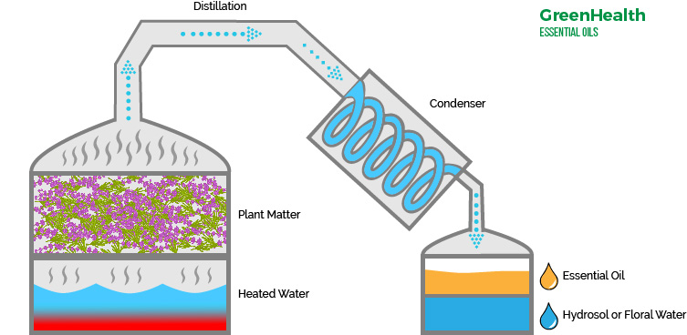

⏲ 5hrs
Essential oils come from a plant which is the oil, fragrance or essense of a plant. Essential oil is concentrated, hydrophobic liquid extracted from plant material. Most of the time essential oil is extracted with steam destillation. Different processes can be used like solvent extraction, coldpressing (mechanical pressure), sfumatura (extraction with sponges). This experiment wil focus on extraction with water and the essential oil.
Boiling the plant in water helps releasing the aromatic and oil-soluble components. The oil will flow at the top. The oil will turn solid because it has a lower melting point than water. The oil can be transferred to a container where it will met again at roomtemperature.

1. Cut the plant in smaller pieces.
2. Put the plant inside a crockpot until it's about half full .
3. Fill crockpot with distilled water until it has covered the
plants.
4. Put the lid upside down back so condense and steam fall back
into the crockpot.
5. Put crockpot on high until water is hot and turn it to low
6. Simmer on low for 3-4 hours.
7. Let the solution cool down to roomtemperature.
8. Let it cool overnight in the fridge. A film of essential oil
will form on the top hardened.
9. Scoop up the hardened oil quickly before it melts and store
in a brown colored glass container.